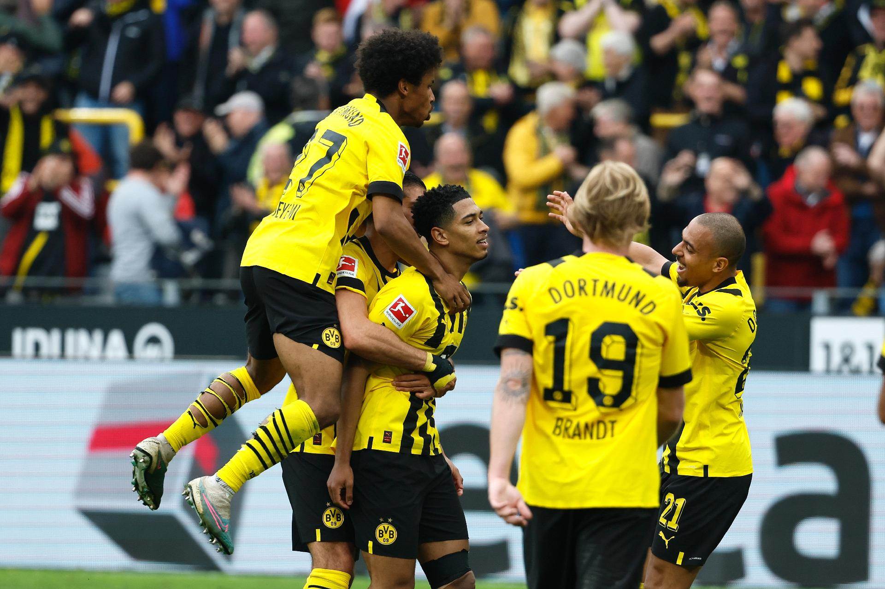

MILAGRE EM MANCHESTER: Borussia Dortmund elimina o City em semifinal histórica da Champions
O futebol europeu viveu nesta quarta-feira uma de suas noites mais inacreditáveis dos últimos anos. Contra todas as previsões, o Borussia Dortmund derrotou o Manchester City por 3 a 2, no Etihad Stadium, e garantiu vaga na final da Champions League após uma atuação marcada por superação, intensidade e frieza nos momentos decisivos.
Apontado antes da partida como amplo favorito, o City chegou à semifinal cercado de expectativa. A equipe comandada por Pep Guardiola possuía o elenco mais valioso da competição e vinha sendo considerada por parte da imprensa europeia como “o time mais dominante do continente”.
O cenário parecia se confirmar no início da partida. Com amplo controle da posse de bola e pressão constante no campo ofensivo, os ingleses abriram vantagem ainda no primeiro tempo com gols de Erling Haaland e Phil Foden.
O Dortmund, no entanto, reagiu antes do intervalo. Aos 41 minutos, Julian Brandt marcou em chute de longa distância e recolocou os alemães na partida.
A equipe visitante voltou diferente para a segunda etapa. Mais agressiva fisicamente e apostando em transições rápidas, passou a explorar os espaços deixados pelo City. Aos 67 minutos, após jogada individual de Jadon Sancho, Niclas Füllkrug empatou o confronto.
O gol abalou emocionalmente os ingleses, que perderam intensidade nos minutos finais. Já o Dortmund cresceu diante da atmosfera do jogo e pressionou até o último lance.
A classificação histórica foi confirmada aos 48 minutos do segundo tempo. Em cobrança de escanteio, o zagueiro Mats Hummels subiu mais alto que a defesa adversária e marcou de cabeça o gol da vitória alemã.
Após o apito final, jogadores do Dortmund comemoraram no gramado diante de um Etihad Stadium em silêncio absoluto. Do lado inglês, o sentimento era de choque. O City, tratado por muitos como praticamente imbatível nesta temporada, viu o sonho europeu terminar dentro de casa.
A imprensa alemã classificou o resultado como “uma das maiores atuações de coragem da história recente do clube”. Já veículos ingleses destacaram o colapso emocional do Manchester City após abrir dois gols de vantagem.
Com a vitória, o Borussia Dortmund avança à final da Champions League e aguarda o vencedor da outra semifinal. Independentemente do desfecho da competição, a noite em Manchester já entrou para a história do futebol europeu como um dos maiores triunfos de um azarão na era moderna do torneio.

A última defesa
O futebol viveu uma noite histórica nesta quarta-feira. Após anos sendo criticado pela torcida e constantemente questionado pela imprensa, o goleiro Lucas Andrade se transformou em herói nacional ao garantir o título de sua seleção em uma dramática disputa de pênaltis.
A partida terminou empatada em 1 a 1 no tempo regulamentar, levando a decisão para as cobranças. Foi então que Lucas brilhou. O goleiro defendeu duas penalidades decisivas e encerrou a disputa com uma defesa considerada por muitos como “milagrosa”.
Assim que a última cobrança foi defendida, jogadores invadiram o gramado enquanto milhões de torcedores comemoravam pelo país. O atleta, antes desacreditado, deixou o estádio carregado pelos companheiros e entrou definitivamente para a história do futebol nacional.
A queda do invencível
Depois de 43 vitórias consecutivas e uma sequência considerada histórica, o campeão mundial Viktor Dragunov finalmente foi derrotado. O lutador, tratado por muitos como praticamente imbatível, encontrou pela frente um adversário que se recusou a entrar no ringue intimidado.
Durante meses, especialistas apontavam a luta como apenas mais uma defesa de título previsível. No entanto, Gabriel Ferraz surpreendeu o mundo ao pressionar o campeão desde os primeiros rounds, anulando completamente o estilo dominante de Dragunov.
A vitória foi confirmada no último round, após decisão unânime dos juízes. O ginásio ficou em silêncio por alguns segundos antes da explosão da torcida. Pela primeira vez em anos, o invencível havia caído.
Força além do peso
O mundo do powerlifting começou a voltar os olhos para um nome improvável: Samuel Aquino. Competindo na categoria até 70kg, o jovem atleta passou a chamar atenção após registrar números que muitos consideram simplesmente absurdos para alguém de seu peso corporal.
Os levantamentos impressionam até atletas experientes da modalidade: 320kg no agachamento, 215kg no supino e impressionantes 390kg no levantamento terra. Marcas normalmente associadas a competidores muito mais pesados e veteranos.
Enquanto especialistas tentam explicar o fenômeno, vídeos de seus treinos continuam circulando pelas redes sociais em ritmo acelerado. A combinação de explosão, técnica agressiva e intensidade extrema transformou Samuel em um dos nomes mais comentados do cenário underground do powerlifting.
Para muitos, ele é apenas um prodígio raro. Para outros, o início de uma lenda capaz de redefinir os limites da força nas categorias leves.
O poder da obsessão
Ao analisar os maiores atletas da história, uma característica aparece de forma quase inevitável: obsessão. Muito além do talento natural, nomes que dominaram seus esportes por anos eram movidos por uma intensidade fora do comum.
Treinos extremos, rotinas repetitivas e uma competitividade praticamente doentia faziam parte da realidade de atletas que se recusavam a aceitar mediocridade. Enquanto muitos enxergavam limite, eles enxergavam oportunidade para continuar evoluindo.
Especialistas afirmam que essa mentalidade ajudou a construir algumas das carreiras mais dominantes já vistas no esporte moderno. Em comum, todos compartilhavam a mesma ideia: não bastava vencer — era preciso ultrapassar qualquer padrão já existente.
Futebol
/*não vou colocar video mn*/
Treino
/*não vou colocar video mn*/
Motivação
/*não vou colocar video mn*/
Luta
/*não vou colocar video mn*/
Princípios dos Campeões
Disciplina
Intensidade
Técnica
Resistência
Estratégia
Recuperação
Curiosidade Brutal
Atletas de elite podem perder
até 3kg de água em um único
evento extremamente intenso.